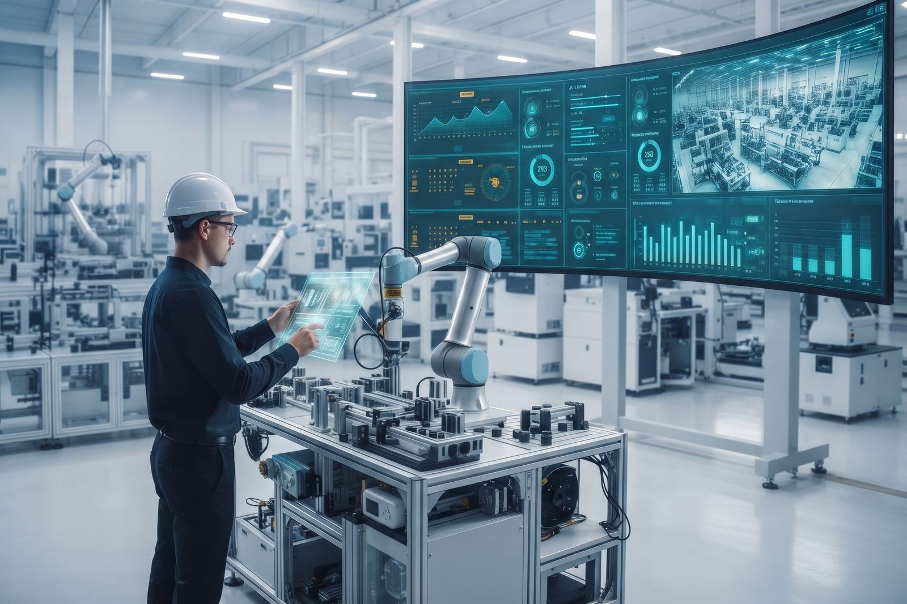

How much energy does each good unit take?
kWh per good unit by line, shift, order and product.
Energy & utilities · In development · OPMM module
Electricity, compressed air, steam, water and gas measured by line, shift and product, and read next to the machine states OPMM already records.


Energy & utilities turns meter readings into a cost per good unit your team can act on.
kWh per good unit by line, shift, order and product.
Energy split by machine state: running, idle, stopped and faulted.
Demand profile by 15-minute interval with the production events behind each peak.
Compressed air, steam, water and gas against production, to find leaks and waste.
Meters report energy. OPMM explains when and why it was used. No reading is counted twice.
The same data path as OPMM, with energy meters added. Select a piece to see what it does.
Assigns consumption to machine states, orders and products, computes kWh per good unit, 15-minute demand and power factor, and keeps the tariff periods.
Energy becomes part of the product cost, not a monthly overhead.
Idle and stopped consumption becomes visible and gets an owner.
Demand peaks and low power factor are seen early enough to act.
Baselines, indicators and records ready for an energy management system.
We are looking for a pilot line. Tell us about your plant and your meters.